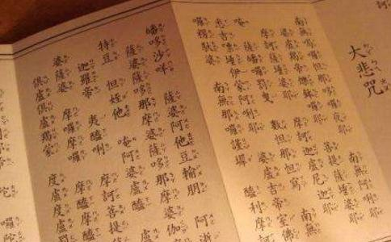

若有
南无大
南无大悲观世音，愿我早得智慧眼；
南无大悲观世音，愿我速度一切众；
南无大悲观世音，愿我早得善方便；
南无大悲观世音，愿我速乘般若船；
南无大悲观世音，愿我早得越
南无大悲观世音，愿我速得戒定道；
南无大悲观世音，愿我早登
南无大悲观世音，愿我速会无为舍；
南无大悲观世音，愿我早同法性身；
我若向刀山，刀山自摧折；
我若向火汤，火汤自枯竭；
我若向
我若向饿鬼，饿鬼自饱满；
我若向修罗，恶心自调伏；
我若向畜生，自得大智慧。
发是愿已，至心称念我之名字，亦应专念我本师阿弥陀如来，然后即当诵此陀罗尼神咒，一宿诵满五遍，除灭身中百千万亿劫
复白佛言，世尊，若诸众生诵持大悲神咒，堕三恶道者，我誓不成正觉。
诵持大悲神咒者，若不生诸佛国者，我誓不成正觉。
诵持大悲神咒者，若不得无量三昧辩才者，我誓不成正觉。
诵持大悲神咒者，于现在生中，一切所求，若不果遂者，不得为大悲心陀罗尼也。惟除不善，除不至诚。
若有比丘。比丘尼。优婆塞。优婆夷。童男。童女。欲诵持者。于诸众生起慈悲心。先当从我发如是愿。
“若有比丘、比丘尼”：若有
南无大悲观世音。愿我速知一切法。
这是对着观世音菩萨面前来发愿。“南无大悲观世音”：什么叫南无呢？就是皈命，把自己性命交给观世音菩萨；也就是敬投，恭敬来皈依观世音菩萨。南无佛，就是皈依佛；南无法，就是皈依法；南无僧，就是皈依僧。南无大悲观世音菩萨，就是皈依大悲观世音。皈依大悲观世音，又怎样呢？就发愿说，“愿我速知一切法”：皈依
南无大悲观世音。愿我早得智慧眼。
我们现在
南无大悲观世音。愿我速度一切众。
我速知一切法，早得智慧眼干什么呢？就为了想要速度一切众。所以又请观音菩萨，说：
南无大悲观世音。愿我早得善方便。
我想度一切众生，就要知道一切方便的法门，才能观机逗教，因人
南无大悲观世音。愿我速乘般若船。
我又皈依大悲观世音，愿我很快就乘得般若的智慧船。
南无大悲观世音。愿我早得越苦海。
愿我很快早早超越这个苦海；我坐智慧船，就越过这生死的苦海。
南无大悲观世音。愿我速得戒定道。
愿我早早得到
南无大悲观世音。愿我早登涅槃山。
我得到戒定道，然后就早一点得登涅槃山。
南无大悲观世音。愿我速会无为舍。
无为舍，就是无为的房子，也就是无为法；得到无为的法门。
南无大悲观世音。愿我早同法性身。
大悲观世音，愿我早早证得法性之身。
我若向刀山。刀山自摧折。
“我若向刀山”：我念〈大悲咒〉的时候，若对着刀山来念，“刀山自摧折”：刀山自己就毁坏没有了。
我若向火汤。火汤自枯竭。
“我若向火汤”：我若对着火汤地狱念〈大悲咒〉，“火汤自枯竭”：这火和汤都自己就消灭了。
我若向地狱。地狱自消灭。
“我若向地狱”：我若对着地狱念〈大悲咒〉，“地狱自消灭”：地狱就化为天堂，没有地狱了。
我若向饿鬼。饿鬼自饱满。
“我若向饿鬼”：我若对着饿鬼念〈大悲咒〉，“饿鬼自饱满”：饿鬼就没有饥饿之苦，也就得到饱满。
我若向修罗。恶心自调伏。
“我若向修罗”：我若对着最恶的修罗众生念〈大悲咒〉，“恶心自调伏”：修罗的恶心，自然就得到调伏，他也就皈依了。
我若向畜生。自得大智慧。
“我若向畜生”：我若对着愚痴的畜生念〈大悲咒〉，“自得大智慧”：他们就都得到最大的智慧。
发是愿已。至心称念我之名字。亦应专念我本师阿弥陀如来。然后即当诵此陀罗尼神咒。一宿诵满五遍。除灭身中百千万亿劫生死重罪。
“发是愿已，至心称念我之名字”：你们每一个众生，诵持〈大悲咒〉，必须要对着观音菩萨，先发这十愿。至心，就是专一其心。称念我之名字，我的名字是谁呢？就是观音菩萨。“亦应专念我本师阿弥陀如来”：不是单单念我的名字就可以了，也应该念我师父的名字；我师父是谁呢？阿弥陀如来。念“南无阿弥陀佛”，不是就单单念“南无观世音菩萨”。木本水源，你应该念我师父的名字，我师父就是阿弥陀如来。“然后即当诵此陀罗尼神咒”：先念我“南无观世音菩萨”的名字，然后再念“南无阿弥陀佛”的名字；念完之后，再诵总持陀罗尼神咒。“一宿诵满五遍”：在每一夜，你能诵满五遍，“除灭身中百千万亿劫生死重罪”：你能这样
观世音菩萨复白佛言。世尊。若诸人天诵持大悲章句者。临命终时。十方诸佛皆来授手。欲生何等佛土。随愿皆得往生。
“观世音菩萨复白佛言”：观世音菩萨又对佛说：“世尊！”“若诸人天诵持大悲章句者”：假设一切的人，和天上的人，诵持大悲章句的，“临命终时”：等到他临命终时，“十方诸佛皆来授手”：授手，就是垂手来接你；和你握手，拉你到他的国度里。“欲生何等佛土”：你想要生哪个佛土去？“随愿皆得往生”：随你自己的愿力，就可以生到任何的国土。
复白佛言。世尊。若诸众生诵持大悲神咒。堕三恶道者。我誓不成正觉。
“复白佛言”：观世音菩萨又对佛说：“世尊！”“若诸众生诵持大悲神咒”：诵持我〈大悲咒〉的众生，“堕三恶道者”：他要是堕落饿鬼、地狱、畜生，这三恶道里去的，“我誓不成正觉”：我就不成佛。如果他诵〈大悲咒〉，不堕落三恶道，我才愿意成佛。
诵持大悲神咒者。若不生诸佛国者。我誓不成正觉。
“诵持大悲神咒者”：假设念〈大悲神咒〉的人，“若不生诸佛国者”：他发愿要生其他诸佛国土，如果不能的话，“我誓不成正觉”：我誓愿不成佛。
诵持大悲神咒者。若不得无量三昧辩才者。我誓不成正觉。
“诵持大悲神咒者”：假设念〈大悲咒〉的人，“若不得无量三昧辩才者”：如果不能讲经说法，开大智慧，得无量三昧大辩才的话，“我誓不成正觉”：我也不成佛。
诵持大悲神咒者。于现在生中。一切所求。若不果遂者。不得为大悲心陀罗尼也。惟除不善。除不至诚。
“诵持大悲神咒者”：诵念〈大悲咒〉的人，“于现在生中”：现在，就是今生。“一切所求”：你所有的希望，一切的要求，“若不果遂者”：若不得到满你愿的。果遂，就是满你的愿，遂心满愿。“不得为大悲心陀罗尼也”：这也不能称做大悲心陀罗尼的神咒。但是有一点，我们先讲明白，“惟除不善”：你若念〈大悲咒〉，一边念，一边杀人，一边偷东西，一边去邪淫、妄语、酒肉，什么都做，那就没有功效。不善，就包括你种种邪僻的行为，譬如